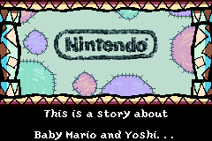
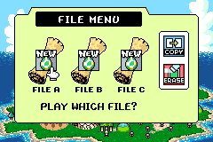

Super Mario Advance 3 - Yoshi's Island (USA) (Virtual Console)
EEPROM 64K Save Format Mapped (Family Spec) gbakit Built-In 💾 MultiBoot 🎮 4P Link
Cartridge Identity
- Game Code
A3AE(FamilyA3A)- Header Title
SUPER MARIOC- Maker / Revision
01/ rev0- ROM Size
- 4.0 MiB (4,194,304 B)
- Save Media
EEPROM 64K- SHA-256
425628648061fd9fa33e99147120dfd705fc62698d8930dff1feeb2e406aaaab- Engine / SDK Group
comm-001(196 families)
Screenshots


Link Cable & Multiplayer Communications
This title contains detected communication capabilities: 💾 MultiBoot 🎮 4P Link.
Detailed protocol specifications, SIO registers, Joybus commands, and MultiBoot sequences are documented in the Link & Multiplayer Reference.
- Multi-Player SIO (4P)
- 16-bit ring network · SIOCNT (
0x04000128) literals:0x10f518,0x10f718,0x10f734· SIODATA32/SIOMULTI0 (0x04000120) literals:0x10f654,0x10f8cc,0x10fb78 - Single-Cart MultiBoot
- Single-Cartridge MultiBoot (Download Play) client/server handler · Thumb SWI 0x25 (
0xDF25):0x12f6d6,0x21260c,0x247366,0x2684ec
Battery Save Format Specification (Family Shared)
This release shares its save architecture with canonical family reference Super Mario Advance 3 - Yoshi's Island (Europe) (En,Fr,De,Es,It) (Family
A3A).
Open Family Save Format Spec (A3AP)Download save-format.json
- Canonical Specification
A3AP· 19 mapped fields · 4 verified checksum(s) · Confidence: MEDIUM- gbakit Built-In Support
- Built-in (A3AE)
gbakit save verify A3AE save.sav
gbakit save decode A3AE save.sav
gbakit save fix A3AE damaged.sav -o repaired.savLate-Game / Unlocked Battery Save
Synthesized clean-room with zero ROM patching and verified live in headless
libmgba.so.0.10 —
see the Late-Game Saves & Boundary Fuzzing Showcase.
- Deep In-Game Warp
- Download
a3ae_deep.sav(8 KiB) · persisted_cleanEEPROM 64K (8 KiB)·sum16_le_over_rev8_logical_slot (0x0104 + 0x0284)
Secret starry nighttime title + FILE A: CLEAR + 99 lives -> LIVE playable World 3-EXTRA (More Monkey Madness) gameplay - Hidden / Post-Game Unlock
- Download
a3ae_unlocked.sav(8 KiB) · persisted_clean eeprom_rev8sum16_le_over_rev8_logical_slot
Secret Star-Crowned Nighttime World 6 Title Screen · All 6 Worlds + Secret & Extra Stages Cleared (100 pts) · FILE A: CLEAR Golden Badge


Observed Battery Save Layout
- Fill Byte & Active Size
0x00fill · 298–298 / 8,192 B active (entropy 2.13 bits/B)- Active Offset Ranges
0x0–0x87,0x8A–0x8B,0x8E–0x8F,0x97–0xC7,0xCA–0xCB,0xCE–0xCF,0xD7–0xFF,0x101–0x107, +8 more (20 total)- ASCII Magic / Headers
0EWM3AMS,0EYA- Observed Variable Regions
- 0 bytes across 0 spans: None
- Candidate Checksum/Counter Spans
- None
ROM Assets, Compression & Audio
- BIOS Compression
- LZ77 (
0x10): 451 streams · RLE (0x30): 0 streams - ROM Pointer Tables
- 90 tables (29 pointing to validated compressed streams)
- SDK Backup Tags
EEPROM_V122
Asset Map (formatkit.asset-map.v1)
Download A3AE-r0-a8bb331a6f0ff7af.asset-map.json.gz (148,871 B (145.4 KiB)) Verified PASS · 39.48% coverage
| Metric | Bytes / Value | Entries |
|---|---|---|
| Identified | 1,645,721 B (1.57 MiB) (39.24%) | 1,467 |
| Mapped | 0 B (0.00%) | 0 |
| Opaque | 10,195 B (10.0 KiB) (0.24%) | 1 |
| Unknown | 2,538,388 B (2.42 MiB) (60.52%) | 1,210 |
| Total ROM Size | 4,194,304 B (4.00 MiB) | 2,678 |
| Coverage % | 39.48% | — |
| Entries w/ Code Refs | 1,472 / 2,678 (54.97%) | — |
Top Identified Formats: compress.bios-lz77 (457 · 736,599 B (719.3 KiB)) · audio.ead-sma-sample (79 · 721,238 B (704.3 KiB)) · gfx.gba-palette (922 · 99,104 B (96.8 KiB)) · compress.bios-huffman (7 · 52,616 B (51.4 KiB)) · rom.multiboot (1 · 35,972 B (35.1 KiB)) · gba.rom-header (1 · 192 B)
Largest unknown Extents (Headerless / Custom Asset Candidates)
| Offset | Size | Shannon Entropy | Code Refs |
|---|---|---|---|
0x000C0014 | 397,056 B (387.8 KiB) | 6.453 bits/B | 0 |
0x0006031C | 392,408 B (383.2 KiB) | 6.350 bits/B | 0 |
0x0003F61C | 132,320 B (129.2 KiB) | 6.411 bits/B | 0 |
0x00010170 | 130,668 B (127.6 KiB) | 6.281 bits/B | 0 |
0x00309C70 | 107,636 B (105.1 KiB) | 6.354 bits/B | 0 |
gzip -dk A3AE-r0-a8bb331a6f0ff7af.asset-map.json.gz && gbakit map verify rom.gba A3AE-r0-a8bb331a6f0ff7af.asset-map.json
gbakit assets export rom.gba --asset-map A3AE-r0-a8bb331a6f0ff7af.asset-map.json -o out/Text, Fonts & Scene Data
- Primary Text Encoding
- 16-bit / UTF-16LE text · custom 1-byte charmap (base 'A' = 0xd8) (
4ASCII strings ·2Shift-JIS runs) - Font & VWF Indicators
- VWF Width Table 1bpp Font · BIOS SWIs: BitUnPack
0x10:2· LZ770x11/12:10· Huffman0x13:4· RLE0x14/15:7 - Scene & Packaging
52ROM pointer tables (≥32 entries,7≥200) ·6relativeu32TOCs ·222OAM metasprite hits
Hardware MMIO Subsystems
ppu_display0x80028e4,0x812c894
Regional Variants & Revisions (Family A3A)
- Super Mario Advance 3 - Yoshi's Island (Europe) (En,Fr,De,Es,It) (
A3AP, 8 MiB) - Super Mario Advance 3 - Yoshi's Island (Europe) (En,Fr,De,Es,It) (Virtual Console) (
A3AP, 8 MiB) - Super Mario Advance 3 - Yoshi's Island (USA) (
A3AE, 4 MiB) - Super Mario Advance 3 - Yoshi's Island + Mario Brothers (Japan) (
A3AJ, 4 MiB) - Super Mario Advance 3 - Yoshi's Island + Mario Brothers (Japan) (Virtual Console) (
A3AJ, 4 MiB) - Yaoxi Dao (China) (
A3AC, 4 MiB)